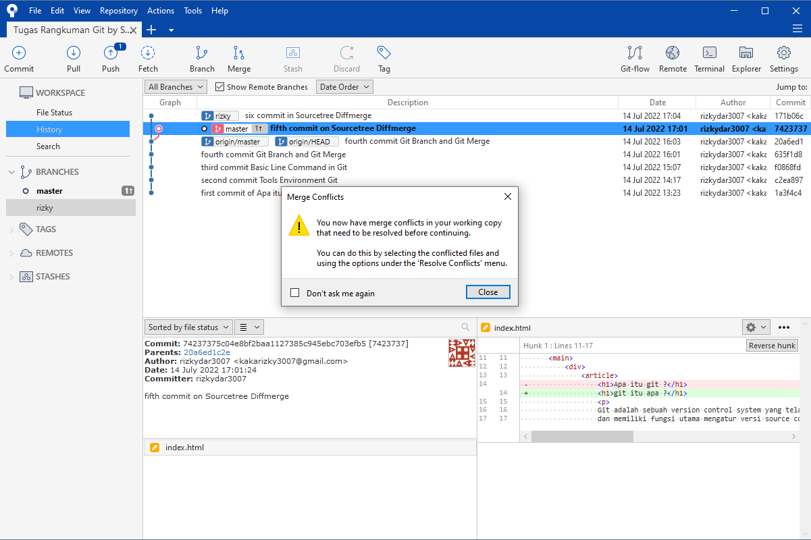

sourcetree

Sebelumnya kita sudah membahas Sourcetree itu apa dan sekarang kita perlihatkan Git GUI tersebut, lihat gambar dibawah ini tmapilan Git GUI
Kita semua sebelumnya sudah mengetahui apa itu Git dan kegunaan nya , Tapi kalian udah mulai mual dengan sistem berbasis CLI (Command Line Interface) yang serba ngetik-ngetik terus pusiang kan ? :) Tapi jangan khawatir ternyata Git pun ada di akses secara GUI (Graphical User Interface) yang serba tinggal klik , yeay jadi mudahkan ? dan fitur dari Git berbasis GUI dapat dieksplor lebih jauh
Sebelumnya kita sudah membahas Sourcetree itu apa dan sekarang kita perlihatkan Git GUI tersebut, lihat gambar dibawah ini tmapilan Git GUI
Pilih Clone untuk mengambil repo dari Gitlab/Github kalian atau pili Add seperti lambang folder di gambar diatas untuk mengambil repo dari Local kalian
Nah bila sudah akan muncul tampilan seperti gambar di bawah
Dan boom , itulah Git berbasis GUI , secara fungsi tetap sama ada commit, pull, push, branch, dan merge. Nah tambahan lagi untuk rangkuman ada materi yang cukup menarik yang ditambahkan yaitu diffmerge untuk mengatasi bila terjadi conflict antara perubahan 2 branch pada 1 file yang sama
Nah pertama saya membuat branch baru bernama rizky
Maka bila sudah dibuat akan nampak seperti gambar dibawah ini
Saya akan membuat simulasi conflict saat git akan di merge antara 2 branch yang memliki 1 file yang sama dan terjadi perubahan di kedua branch tersebut, perhatikan gambar dibawah :
Perhatikan gambar diatas . Kedua gambar tersebut terdapat perubahan pada 1 file yang sama di 2 branch . File index.html saya rubah masing-masing h1 nya berbeda dan akan terjadi conflict pada saat di merge branch rizky ke master
Gambar diatas adalah warning bahwa pada saat branch rizky di merge ke branch master terjadi conflict, maka dari itu langkah selanjutnya untuk agar kita dapat mem push branch kita ke cloud server kita aman maka kita harus selesaikan conflict nya dulu. Perhatikan gambar dibawah , penyelesaian untuk conflict pada branch